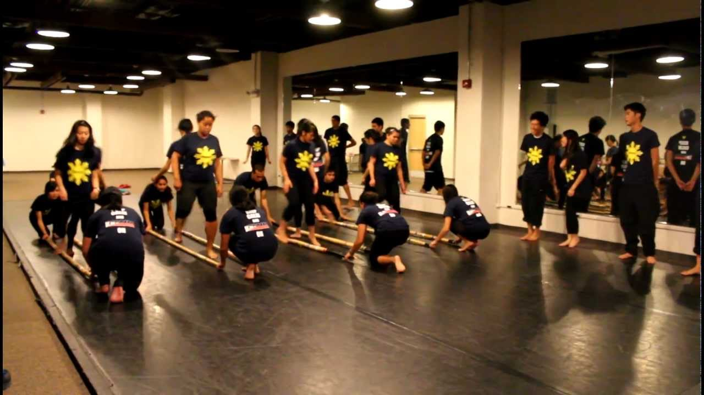

Kasama Dance Team
That's right, Kasama has it's own dance team! Every year during the fall semester, we teach those that are interested in learning traditional Filipino dances three different popular dances. Two of the three dances we teach changes from year to year but we always teach the traditonal dance known as "Tinikling." Tinikling is one of the most popular Filipino dances and involves the "clicking" of bamboo poles while a dancer steps in and out of them in rhythm with the beat of the poles.
Ever since the establishment of the club, Kasama has performed at Journey Into Asia, or JIA. JIA is an event hosted by the Asian Student Association at UNC and basically it's a night of performances from different cultures across Asia by different on and off-campus organizations. Dance practices start in September and end in early November, when JIA is hosted. If you would like a preview of what Kasama dance is like, you can find our past performances at JIA below.